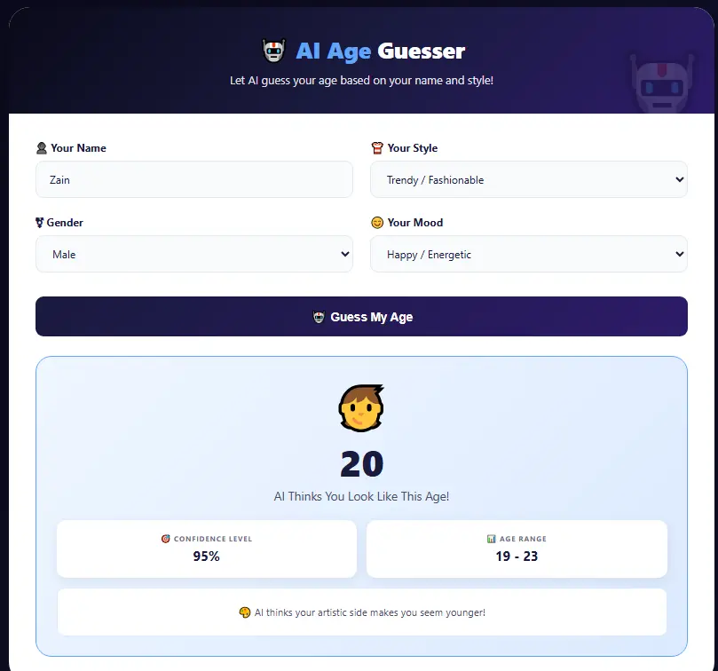

🤖 AI Age Guesser: Free Online Age Prediction Tool 2026
📅 Updated: August 30, 2026 | 👁️ 12 min read
🤖 What is an AI Age Guesser? The AI Age Guesser is a free online entertainment tool that creates a playful age estimate using your entered name and selected preferences. Choose a clothing style, gender, and mood, then click the Guess My Age button to see an estimated age, confidence-style score, and age range. You can try different combinations to explore how the displayed result changes. This tool does not analyze your face, verify your real age, or use a scientific age-detection system. It is designed purely for fun and requires no registration.
Name, style, gender and mood
No image upload required
No registration required
Not a scientific age test
📚 Table of Contents
🤖 1. What is AI Age Guesser?
The AI Age Guesser is a free online entertainment tool that gives you a playful age estimate based on the information and preferences you enter. You can provide your name and select a clothing style, gender, and mood to see the result displayed by the tool.
You can try different combinations of styles and moods to see how the estimated age changes. It can also be used as a lighthearted age guessing game with friends or family. No photo upload or registration is required.
💡 Important to Know: This tool does not examine your face or determine your actual age. Its result is for entertainment only and should not be treated as a scientific age assessment.
📐 2. How to Use This AI Age Guesser
Follow these simple steps to try the age guessing tool:
- Step 1: Enter your name in the name field.
- Step 2: Choose a clothing style: Classic, Trendy, Casual, Edgy, Sporty, Bohemian, Minimalist, or Vintage.
- Step 3: Select your gender from the available options.
- Step 4: Choose a mood: Happy, Calm, Mysterious, Confident, Funny, or Serious.
- Step 5: Click the Guess My Age button to display your result.
💡 Helpful Tip: Try changing your clothing style or mood and run the tool again. Compare the results to see whether your selections make a difference.

Screenshot: AI Age Guesser displaying sample inputs and an estimated age result.
🧠 3. How the Age Guessing Result Is Generated
The age guessing tool takes the choices you enter and displays an estimated age result. These choices include your name, clothing style, gender, and mood.
Each option is part of the tool's input process. You can experiment by changing one selection at a time and checking whether the displayed result changes. This gives you a simple way to explore the tool without uploading a photograph or entering your actual date of birth.
💡 Please Remember: The displayed age is only an entertainment-based estimate. It does not establish your real age, identify your personality, or provide a scientifically verified age prediction.
📊 4. How Different Inputs Affect the Age Estimate
The tool starts with a base age of 25 and applies programmed adjustments according to the options you select. Here are some examples of how these selections affect the calculation:
The name length also affects the calculation: names with fewer than four characters add 2 years, while names longer than seven characters subtract 2 years. Other style and mood choices have their own programmed adjustments.
After applying these adjustments, the tool adds a small random variation of up to approximately two years. The final estimate is kept within the range of 10 to 80 years.
Important: These adjustments are preset game rules, not scientific facts about age or personality. The result is intended for entertainment only.
📸 5. Text-Based vs Photo-Based Age Estimation
Age guessing tools can use different types of input. Some tools ask users to enter information, while others may use an uploaded photograph. Understanding this difference helps you know what to expect before using a tool.
Our AI Age Guesser is a text-based entertainment tool. It does not require a photograph, examine facial features, or determine your actual age. Its estimated result should not be treated as a scientific measurement.
🎯 6. Why Use an AI Age Guesser?
This age guessing tool offers a simple way to enjoy a playful age estimation experience. Here are some ways you can use it:
- Quick Entertainment: Get a playful age estimate using your selected options.
- Try Different Combinations: Change your style, mood, or other selections and compare the displayed results.
- Group Activities: Try the tool with friends or family and compare everyone's results.
- Conversation Starter: Use the results as a lighthearted topic during casual conversations.
- No Photo Upload: Use the tool without submitting a personal photograph.
- Simple to Use: Enter your information, choose the available options, and click the button to see your result.
The tool is designed for casual entertainment. Its estimated age is not a reliable measure of your real age or appearance.
🎉 7. Age Guessing Game for Parties
The AI Age Guesser can be used as a simple group activity at parties, family gatherings, or casual get-togethers. Each person can enter a name, select the available preferences, and view their playful age estimate.
- Birthday Parties: Let guests take turns trying the age guessing tool.
- Bridal Showers: Add it as a lighthearted activity between other party games.
- Family Gatherings: Compare the different results among family members.
- Friends' Challenge: Ask everyone to try different style and mood combinations.
- Group Discussion: Talk about the results and share a few laughs together.
💡 Game Idea: Let each person try two or three different combinations. Compare the displayed estimates and see how the results vary. Remember, the estimates are for entertainment, not actual age predictions.
💡 8. Tips for Trying Different Age Guessing Results
You can explore the AI Age Guesser in different ways by changing the available selections. These simple tips can help you understand and compare the results.
1. Change One Selection at a Time
Keep your name and other selections the same, then change only your clothing style. Run the tool again and compare the displayed estimate.
2. Explore Different Moods
Try options such as Happy, Calm, Confident, or Serious. This lets you explore different input combinations in the tool.
3. Compare Your Results
Note the estimated age, confidence-style score, and age range shown after each attempt. Comparing these results can make the experience more interesting.
4. Try It with Friends
Invite friends or family members to enter their own choices. Compare the results as a casual guessing activity.
💡 Remember: Different results do not mean that the tool has discovered your actual age. The estimates and confidence-style scores are for entertainment only.
❓ 9. Frequently Asked Questions (FAQ)
🎯 10. Conclusion - Try the AI Age Guesser
The AI Age Guesser offers a simple and entertaining way to explore playful age estimates using your name, clothing style, gender, and mood. You can experiment with different selections, compare the displayed results, or try the tool with friends and family.
Before using the tool, keep these points in mind:
- Enter your name and choose from the available options.
- Try different combinations to compare the displayed estimates.
- Use it as a casual activity with friends or family.
- No photograph is required to use this text-based tool.
- The estimated age and confidence-style score are for entertainment only.
- The result does not determine your actual age or provide a scientific assessment.
Ready to try it? Enter your choices in the AI Age Guesser above, click Guess My Age, and explore your result. The tool is free to use and does not require registration.
🔗 Share This Tool
Share the AI Age Guesser with your friends and family!

About the Author: Zain Uddin
Founder, FreeOnlineTools203.com | Web Developer & SEO Expert
Zain Uddin is the founder of FreeOnlineTools203.com, a platform offering 240+ free online tools across 18 categories. With 3+ years of experience in web development, SEO, and freelancing (Fiverr), he personally builds and tests every tool for accuracy. He is also a published author on Amazon Kindle (KDP).
Expertise: Calculator tools, SEO, article writing, translation, graphics design.